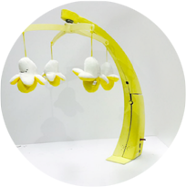
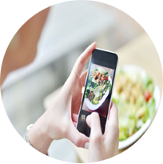
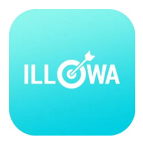
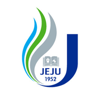
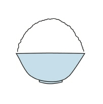
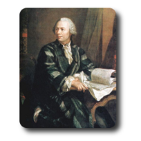
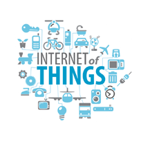
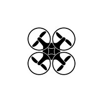

프로젝트
팀 프로젝트

{kind=link}

{kind=link}

{kind=link}

{kind=link}

제대 음식점
2014. 3. ~ 2014. 6.
'제대 음식점' 이라는 어플리케이션을 만들어 학생들에게 학교주변 음식점 정보와 위치를 알려주어 편의성을 제공하였습니다.
Tools : Eclipse Language : Java
수상 내역 확인
{kind=link}
{kind=link}
학습

IS-DEC
2016. 1. 29. ~ 2. 4.
IS-CAPS에 포함된 IS-DEC(International Student Joint Capstone Design Project)은 1주일간에 말레이시아에서 이루어졌었던 캠프입니다. 말레이사아, 인도네이사, 싱가포르 친구들과 함께 프로젝트를 진행하며 다른 지역의 친구, 문화를 깨닫고 새로운 아이디어를 창출해내는 프로젝트를 진행하였습니다.
수료 내역 확인
{kind=link}

프로젝트 오일러
2016. 1. 4. ~ ing
프로젝트 오일러 문제를 풀면서 알고리즘 공부를 하고 있습니다. md 파일을 이용해 간단히 제가 푸는 방법에 대해 설명을 하였습니다. java를 기반으로 코딩 되었습니다.
확인자료 확인

IoT 플랫폼 교육
2015. 12. 21. ~ 12. 22.
전북대학교 공학교육혁신센터에서 주관한 IoT플랫폼 교육에 참가하였습니다. 실제 에디슨 보드를 이용하여 LED를 만들었고, 스마트 폰과 서버를 이용해 LED를 제어하는 기술을 배웠습니다.
수료 내역 확인
{kind=link}

{kind=link}
프레젠테이션 교육
2014. 5. 14. ~ 5. 16.
제주대학교에서 주최한 2014 실전대비 프레젠테이션 아카데미를 수료하여, 발표를 하거나 대화를 할 때에 자신감과 방법을 얻을 수 있었습니다.
수료 내역 확인
{kind=link}
교육사령부 CERT병
2012. 2. ~ 2013. 11.
대전 육군교육사령부에서 약 2년간 CERT(Computer Emergency Response Team)병으로 근무를 하였습니다. 교육사령부에 사용되는 전 서버 관리와 IDS, IPS를 이용한 해킹 방지를 하였고, 실제적으로 하드웨어 조립과 간부들의 편의성을 위해 소프트웨어를 개발하였습니다.
차세대 통신망 연구실
2014. 3. ~
군대에서 전역을 하고 2학년이 시작되면서, 안기중교수님 연구실인 차세대통신망 연구실에서 프로젝트 진행과 자기 개발을 하고 있습니다. 2015년도 부터 연구실에서 방장 책임을 맡고 있습니다.